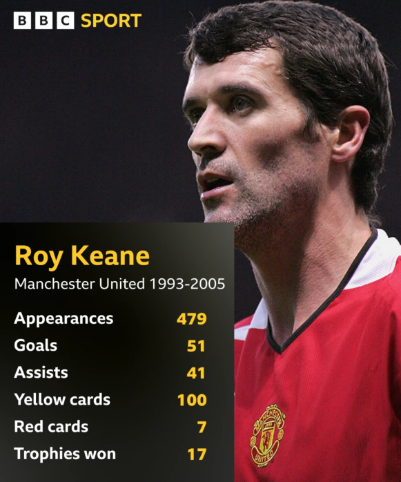

Career Goals
Earn a degree in information Technology and progress developing my professional carrer at Target. Build a successful career in Web Development, Software Development, and Data Analytics.
Welcome to my BioSite! This website is a snapshot of who I am and 9 what I enjoy. From coding and web development to soccer and building 10 custom computers, each of my hobbies has helped me develop valuable 11 skills and experiences. Explore the site to learn more about my 12 interests, aspirations, and the activities that inspire me every day.

Tenacious leader, fearless competitor, relentless winner.
Earn a degree in information Technology and progress developing my professional carrer at Target. Build a successful career in Web Development, Software Development, and Data Analytics.
Through coursework and personal projects, I have developed problem solving skills and gained valuable experience with technology.